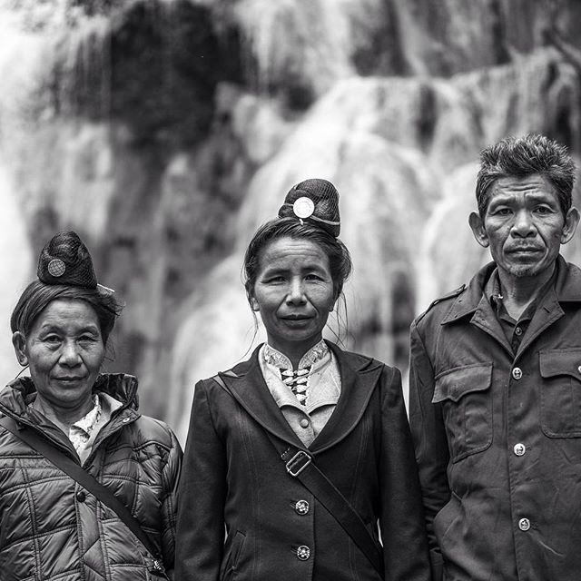

main page
page two
The Tai Dam are among the least studied of all Southeast Asian Ethnic groups.
When asked by fellow Iowans about their ethnicity,some present-day Tai Dam have resorted to telling others they are Lao; this is easier than trying to explain their cultural background to the vast majority who know nothing about the Tai Dam.